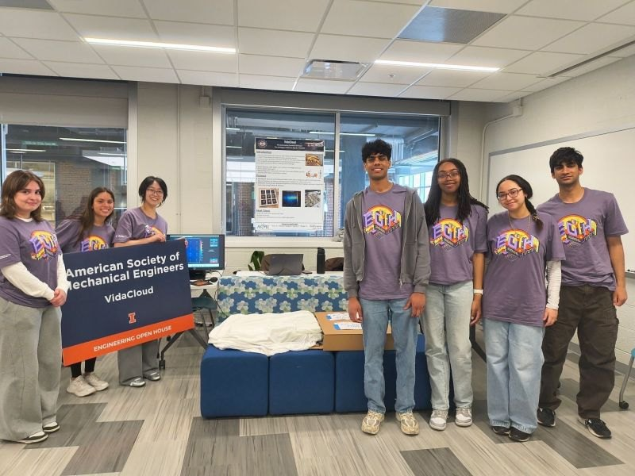

VidaCloud — Smart Pressure Ulcer Prevention System
ASME Carle-CIMED Product Development Team · Team Lead · Sep 2024 – Apr 2026
Led a 15-person team developing a smart mattress topper with embedded pressure sensor arrays and pneumatic actuation to detect and relieve patient pressure points. Designed and tested a pneumatic repositioning system projected to reduce nurse workload by 30%, building the data-collection stack with Arduino IDE and custom PCB design. Pressure ulcers affect over 2.5 million U.S. patients annually.
1st Place, Engineering Industry Impact Award (2026) · 2nd Place (2025), among 100+ projects · Semifinalist, International Tapia Medical Competition